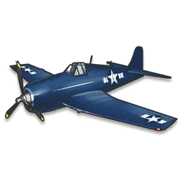
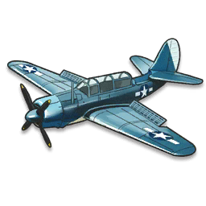

Grumman F6F Hellcat, tiêm kích (fighter aircraft)

Curtiss SB2C Helldiver, máy bay ném bom bổ nhào (dive bomber)

Grumman TBF Avenger, máy bay ném ngư lôi (torpedo bomber)
USS Enterprise (CV-6) là 1 tàu sân bay của Hải quân Hoa Kỳ, thuộc lớp tàu Yorktown. Đây là một trong những tàu chiến của Mỹ được xây dựng trước Thế Chiến thứ 2, và sống sót qua cuộc chiến này.
Enterprise đã góp công lớn trong nhiều trận đánh quan trọng chống lại quân Nhật.
Tàu Enterprise đặc biệt nổi tiếng bởi chiến công đánh chìm tàu sân bay Akagi, Kaga, và Hiryuu trong trận Midway (Battle of Midway), cũng như sống sót sau nhiều lần bị tấn công bởi Hải quân Nhật. Hải quân Nhật đã tuyên bố ít nhất 3 lần rằng họ đánh chìm thành công Enterprise, trong khi thực tế lại không phải vậy (và biệt danh của Enterprise, "Con ma xám", hay "The Grey Ghost" ra đời).
Enterprise được trao tặng 20 ngôi sao chiến đấu, thành tích cao nhất trong mọi tàu chiến trong Thế Chiến II. Ngoài ra, chiếc tàu này còn được trao tặng phần thưởng cao quý nhất của Hải quân Hoàng gia Anh, Cờ hiệu Hải quân Anh ("British Admiralty Pennant").
Grumman F4F Wildcat, tiêm kích (fighter aircraft)
Douglas SBD Dauntless, máy bay ném bom bổ nhào (dive bomber)
Douglas TBD Devastator, máy bay ném ngư lôi (torpedo bomber)
Grumman F6F Hellcat, tiêm kích (fighter aircraft)
Curtiss SB2C Helldiver, máy bay ném bom bổ nhào (dive bomber)
Grumman TBF Avenger, máy bay ném ngư lôi (torpedo bomber)